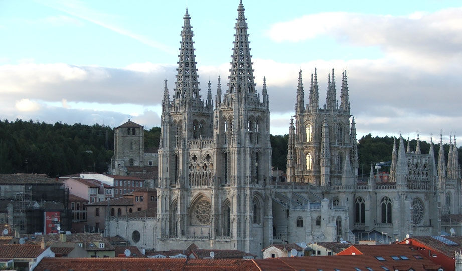
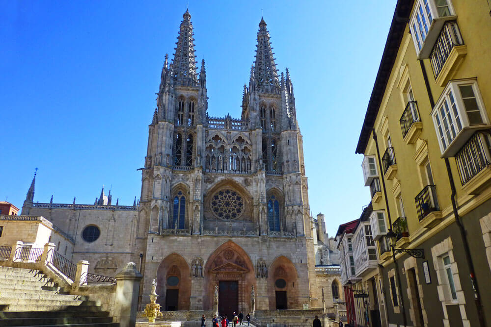
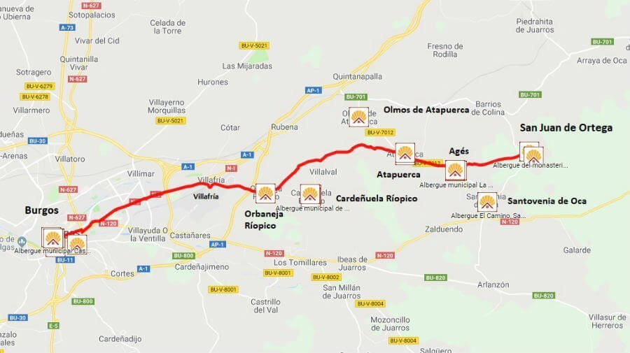
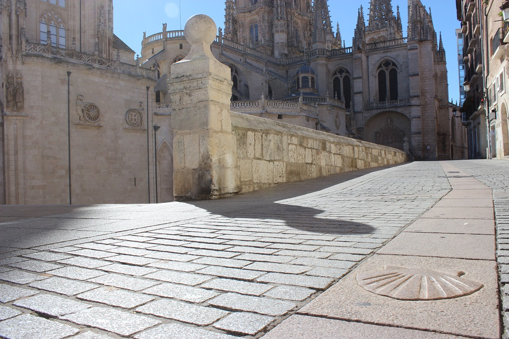
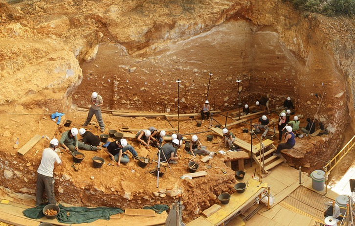
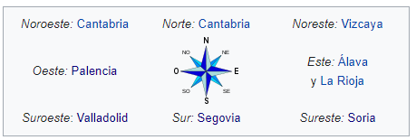
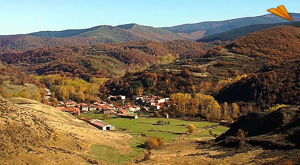

Burgos
Cultura
La provincia cuenta con tres bienes Patrimonio de la Humanidad, situándose en la cabeza de la lista en España, solo igualada por las provincias de Madrid y Barcelona.
Catedral de Burgos
La Santa Iglesia Catedral Basílica Metropolitana de Santa María es un templo catedralicio de culto católico dedicado a la Virgen María, en la ciudad española de Burgos.
Su construcción comenzó en 1221, siguiendo patrones góticos franceses. Tuvo importantísimas modificaciones en los siglos xv y xvi: las agujas de la fachada principal, la capilla del Condestable y el cimborrio del crucero, elementos del gótico flamígero que dotan al templo de su perfil inconfundible. Las últimas obras de importancia (la sacristía o la capilla de santa Tecla) pertenecen ya al siglo xviii, siglo en el que también se modificaron las portadas góticas de la fachada principal. La construcción y remodelaciones posteriores se hicieron con piedra caliza extraída de las canteras de la cercana localidad de Hontoria de la Cantera.
Los elementos decorativos y el mobiliario litúrgico del interior pertenecen a variados estilos artísticos, desde el propio Gótico, el Renacimiento o el Barroco
Camino de Santiago
Es a partir del siglo XI cuando el Camino de Santiago comienza a consolidarse como la ruta de peregrinación más importante de la Europa Cristiana. Los peregrinos que procedentes de Francia se dirigían a Santiago de Compostela por el "Camino Francés", atravesaban las provincias de Navarra, La Rioja, Burgos, Palencia y León, antes de alcanzar tierras gallegas.
El Camino va dejando su impronta en las poblaciones que atraviesa condicionando en algunos casos su trazado, que adquiere forma de pueblo-camino, y enriqueciendo su patrimonio artístico con la construcción de hospitales, albergues, ermitas, iglesias, monasterios y numerosas infraestructuras relacionadas con esta vía como puentes, calzadas o fuentes.
La ruta jacobea atraviesa de este a oeste estas tierras. Son 114 kilómetros que enlazan La Rioja, la ciudad de Burgos y la provincia de Palencia, dejando a su paso atractivos paisajes naturales y un rico patrimonio monumental. A lo largo de la historia este itinerario ha favorecido el intercambio económico, artístico y cultural entre la península y el resto de Europa.
Por suerte, no todos los peregrinos utilizaron la misma vía para llegar a Santiago de Compostela. Otros peregrinos han utilizado durante siglos la Vía de Bayona, que, procedente del País Vasco, llegaba al Condado de Treviño y Miranda de Ebro antes de atravesar La Bureba y confluir con el Camino Francés cerca de la capital burgalesa.
Y por las tierras del norte de la provincia también está confirmado que existió otro camino que, durante varios siglos, evitaba adentrarse en tierras más conflictivas y peligrosas para los peregrinos.
Atapuerca
El Sitio arqueológico de Atapuerca es un conjunto de yacimientos arqueológicos y paleontológicos que contienen algunos de los restos de seres humanos más antiguos de la península ibérica. Se encuentran en la sierra de Atapuerca, Burgos, en el yacimiento de la Gran Dolina restos del Homo antecessor con, al menos, una antigüedad de 800 000 años, y en la Sima del Elefante otros de una especie de Homo sin concretar y de 1,2 millones de años. Estos restos quedaron al descubierto al construir una línea de ferrocarril en el siglo XIX.

Ha sido declarado Espacio de Interés Natural, Bien de Interés Cultural y Patrimonio de la Humanidad como consecuencia de los excepcionales hallazgos arqueológicos y paleontológicos que alberga en su interior, entre los cuales destacan los testimonios fósiles de, al menos, cinco especies distintas de homínidos: Homo sp., Homo antecessor, Homo heidelbergensis, Homo neanderthalensis y Homo sapiens.
Volver al inicio
Geografía
En la provincia de Burgos hay fuertes contrastes de relieve entre las zonas orientales-septentrionales y las occidentales-meridionales. Se trata de una de las provincias españolas de mayor altitud, que se puede cifrar en una media superior a los 800 m sobre el nivel del mar, debido sobre todo a sus extensos páramos caso del Páramo de Masa y La Lora,y entre ambos el Valle del Rudrón.
La cordillera Cantábrica ciñe a la provincia por el norte y nordeste que incluye los páramos antes citados, mientras que la cordillera Ibérica lo hace por el este y sureste. En esta última cordillera se encuentra el pico San Millán (2130 m), el más alto de la provincia.
La altitud repercute en el clima, caracterizado por inviernos rigurosos y largos.

Lo accidentado del suelo de esta provincia da origen a un profuso sistema hidrográfico, que presenta la singular circunstancia de llevar sus aguas a los tres mares que circundan la península ibérica.
Estacionalmente hay sensibles diferencias de caudal; durante el verano se reduce notablemente, contribuyendo a ello la escasez de lluvias, la evaporación, que alcanza extraordinarias proporciones a causa de la falta de vegetación, y los vientos secos y asoladores que en ciertos días se dejan sentir. En otoño, las lluvias aumentan el caudal y la velocidad de la corriente, lo que se traduce en una erosión más activa. Las fusión de las nieves, provocada por las lluvias primaverales, eleva el nivel de los ríos a su mayor altura en los meses de marzo y abril.
Las aguas que discurren por la provincia se reparten muy desigualmente entre los tres mares que circundan la península ibérica. La cuenca del río Cadagua conduce al mar Cantábrico las aguas que riegan una pequeña zona al norte; la cuenca del río Ebro recoge las aguas del norte para conducirlas al Mediterráneo; y finalmente la cuenca del río Duero, que abarca la mayor extensión, las conduce al océano Atlántico.

Al entrar el Ebro en la provincia, lo hace a una altitud de 710 m sobre el nivel del mar y la abandona, después de haber recorrido 145 km, con una altitud de 450 m. Sus principales afluentes son, por la izquierda: Nava, Pandraves, Trueba y Nela; por la derecha: Rudrón, Oca, Oroncillo, Tirón y Najerilla.
El río Duero tiene un recorrido de 68 km. Sus principales afluentes son, por la izquierda:Riaza y Arroyo de La Nava; por la derecha: Lobos, Arandilla, Bañuelos, Gromejón, Pisuerga y Aranzuelo.
Al Pisuerga llegan las aguas del Arlanza, que con una longitud de 135 km es el segundo en longitud, Arlanzón, Abejo, Pedroso, Franco, Pico, Vena, Ubierna, Esgueva, Hormaza, Urbel, Cogollos, Lucio, Odra, Brulles y Odrilla.
Volver al inicio
Historia
Prehistoria
En la provincia de Burgos se encuentra el yacimiento prehistórico más importante de España y uno de los más importantes del mundo. Se trata del yacimiento de la sierra de Atapuerca, que se extiende de noroeste a sudeste, entre los sistemas montañosos de la cordillera Cantábrica y el sistema Ibérico. Ha sido declarado Espacio de Interés Natural, Bien de Interés Cultural y Patrimonio de la Humanidad como consecuencia de los excepcionales hallazgos arqueológicos y paleontológicos que alberga en su interior, entre los cuales destacan los testimonios fósiles de, al menos, tres especies distintas de homínidos: Homo antecessor, Homo heidelbergensis y Homo sapiens.
Edad Antigua
Durante la edad antigua, la provincia contó con numerosos asentamientos. Quizá el más importante sea el de la ciudad romana de Clunia, entre las localidades de Coruña del Conde y Peñalba de Castro. Se trató de una de las ciudades romanas más importantes de la mitad norte de Hispania y fue la capital de un convento jurídico en la provincia Hispania Citerior Tarraconensis, el denominado Conventus Cluniensis. La ciudad estaba situada en la vía que iba de Caesaraugusta (Zaragoza) a Asturica Augusta (Astorga). Clunia es un topónimo de origen arévaco.
Sin embargo, Clunia no es la única ciudad romana. En la enumeración de las civitates hispánicas anteriores a la llegada de los romanos, Plinio el Viejo mencionó Tritium Autrigonum entre las diez que formaban el territorio de los autrigones. También es mencionada dos veces en el Itinerario de Antonino, localizada en una calzada que se dividía en Virovesca (Briviesca). La construcción de esta calzada, se relaciona con las campañas militares de Roma contra los cántabros y astures y con la campaña de Augusto del 26 a. C.
Dentro del citado Itinerario de Antonino, concretamente en la Iter XXXIV, se ubica la ciudad romana de Deóbriga, ciudad que ha sido ubicada en el yacimiento arqueológico de Arce-Mirapérez (término de Miranda de Ebro). Dicho conjunto arqueológico alberga los restos de época autrigona correspondientes a la citada ciudad de Deóbriga así como su posterior transformación en una ciudad romana. Fue, durante los siglos i y ii, una de las principales ciudades de la calzada Ab Asturica Burdigalam. Sobre el yacimiento se localiza actualmente la pequeña aldea de Arce.
Edad Media
En el inicio de la Edad Media se pudieron escribir en la provincia de Burgos las que algunos autores ven como las primeras palabras escritas en castellano: los cartularios de Valpuesta son una serie de documentos del siglo xii que, a su vez, son copias de otros documentos, algunos de los cuales se remontan al siglo ix, si bien la autenticidad de algunos de ellos es discutida. Están escritos en un latín muy deficiente que trasluce algunos elementos propios de un dialecto romance hispánico, que ya se corresponde con las características propias del castellano, lengua de la que podrían ser su primera manifestación escrita conservada. El estatuto de autonomía de Castilla y León los menciona en su preámbulo como uno de los primeros testimonios escritos en lengua castellana. Por ello, Valpuesta, al igual que San Millán de la Cogolla, se atribuye el título de "Cuna del Castellano". El profesor Francisco Cantera recoge en sus estudios el sustrato vasco en lenguas romances. La de Valpuesta desciende de la visigoda Diócesis de Oca, en territorio de los Autrigones, que más tarde se conoce como Bardulia y que es origen de Castilla. Otros monasterios que han servido como centro cultural de desarrollo político y cultural de Castilla son el monasterio de San Salvador de Oña y el monasterio de San Pedro de Cardeña (Beato de San Pedro de Cardeña).
El Reino de Castilla (en latín, Regnum Castellae) fue uno de los reinos medievales de la península ibérica. Castilla surgió como entidad política autónoma en el siglo ix bajo la forma de condado vasallo de León, alcanzando la categoría de «reino» en el siglo xi. Su nombre se debió a la gran cantidad de castillos que se encontraban en la zona.
Edad Moderna
La ciudad de Burgos era un punto estratégico en el comercio de la lana castellana en Flandes, a través de los puertos cántabros. Varias cortes fueron celebradas en la ciudad, cuyos diputados tenían en privilegio de ser los primeros en hablar, tal como figura en uno de los lemas de su escudo. Las Leyes de Burgos sentaron las bases del derecho indiano y más tarde de los derechos humanos. En esa época nació el jurista Francisco de Vitoria.
Edad Contemporánea
Guerra de la Independencia
El hecho de armas más importante que tuvo lugar en la provincia fue la batalla de Espinosa de los Monteros el 10 y 11 de noviembre de 1808, siendo una de las pocas batallas de todas las Guerras Napoleónicas en Europa que duraría dos días.
Nacimiento de la provincia de Burgos
Tras el fallecimiento de Fernando VII, la reina regente designa secretario de Fomento a Javier de Burgos encomendándole como tarea la división civil del territorio español.
En la segunda mitad del siglo xix en la provincia de Burgos se construyeron once estaciones de telégrafo óptico, de la Línea de Castilla, que unía Madrid con Irún.
Volver al inicio
Localidades
Existen 371 municipios en la provincia.

La provincia de Burgos es la 6.ª de España en que existe un mayor porcentaje de habitantes concentrados en su capital (47,64 %, frente al 31,96 % del conjunto de España).
Volver al inicio
Localización
La provincia de Burgos se localiza en la parte norte de la península ibérica, en la región histórica de Castilla y desde 1983 integrada en la comunidad autónoma de Castilla y León. Limita por el norte con las comunidades autónomas de Cantabria y del País Vasco, donde la cordillera Cantábrica juega el papel de frontera natural entre la Meseta Norte y la costa cantábrica. Por el oeste limita las de Valladolid y Palencia; al este con el extremo superior de la cordillera Ibérica, que la separan de la comunidad autónoma de La Rioja y la provincia de Soria y al sur con la provincia de Segovia.
Volver al inicio
Naturaleza
- El río Ebro en todo su recorrido, y principalmente los desfiladeros que forma al atravesar sistemas calcáreos: Orbaneja, Pesquera, Tudanca, Hocinos, Horadada y Sobrón. Destaca la peculiaridad del llamado Pozo Azul.
- Los valles de Mena, de Valdivielso, Las Machorras.
- Desfiladeros: Yecla, Río Lobos, Arlanza, Nela.
- La Sierra de la Demanda y sus estribaciones. 
- Cuencas visuales cerradas: Poza de la Sal, Huidobro, Alba o Caderechas.
- Sistemas montañosos de gran relieve: Monte Santiago, Montes Obarenes, Montes de la Peña, Las Mamblas, Neila-Umbría.
- Campiñas que han mantenido la diversidad de usos del suelo: Demanda baja, Alto Arlanza, Juarros, Lara, etc.
- Montañas de Espinosa: Zona de Especial interés cerca del Castro Valnera y Estación de esquí de Lunada en Espinosa de los Monteros, Ojo Guareña


Volver al inicio
Tradiciones
El Colacho
Se celebra el domingo del Corpus en Castrillo de Murcia. Es una fiesta de la Iglesia católica destinada a celebrar la Eucaristía. Su principal finalidad es proclamar y aumentar la fe de la Iglesia en Jesucristo presente en el Santísimo Sacramento.
Romería de Las Nieves.
Se celebra el 5 de agosto y es la romería más importante de la zona norte de Burgos. Se celebra en la localidad de Las Machorras, en el municipio de Espinosa de los Monteros. En ella tienen lugar unas danzas típicas de un posible origen prerromano, además de lo que se denomina como "Echar el verso" en el que los propios danzantes y "el Bobo" cuentan, con una entonación particular, las noticias acaecidas en el pueblo durante el año. Acude mucha gente de las provincias de Burgos, Cantabria, Vizcaya, Zaragoza y Madrid.

Fiestas de San Juan del Monte
En fecha variable, se celebra el fin de semana anterior al lunes de Pentecostés en Miranda de Ebro. Declaradas fiestas de interés turístico nacional, desde 2015. Su origen se remonta a la Edad Media y es considerada actualmente como la mayor romería del norte español.
Volver al inicio
Otros
Gastronomía
La gastronomía de la provincia burgalesa es muy variada debido a su gran extensión territorial. El norte de la provincia, la zona más montañosa, está influenciada por la cocina pasiega y cántabra, mientras que al este, la gastronomía riojana se funde con la burgalesa. La zona de la Ribera del Duero se ve más influenciada por la cocina netamente castellana, con el lechazo asado (asado) como plato principal, mientras que en la comarca del Ebro, se funden tanto la gastronomía castellana, como la vasca y la riojana, donde destaca la caza y el pescado. Los platos más típicos de la zona interior son la llamada Olla podrida, las alubias de Ibeas o los caparrones de Belorado.
Aunque sin duda el plato más característico de la provincia es la morcilla de Burgos, un embutido sin carne, relleno principalmente con cebolla, sangre, manteca y arroz, a la que se añaden otros condimentos como el pimentón. En algunas zonas del norte de la provincia, realizan una variedad de morcilla más delgada que la tradicional que se llama delgadilla. Otro producto típico es el queso de Burgos, un tipo de queso fresco. También el queso de Sasamón es un producto característico. El goshúa o el hojaldre son dos ejemplos de la variedad gastronómica en postres de la provincia.
El vino es otro de los productos de gran tradición en la provincia de Burgos, y además en el territorio existen numerosos caldos con Denominación de origen entre los que destacan los de Ribera del Duero (elegida mejor región vitivinícola del mundo), Arlanza y Rioja, teniendo Castilla y León la única bodega con esta última denominación en la provincia de Burgos en El Ternero (Miranda de Ebro). Otra bebida típica de algunas zonas es el zurracapote.
La provincia, y en especial en la Ribera del Duero, cuenta con otro plato típico de gran tradición como el cordero asado. Aranda de Duero es sede de la Indicación Geográfica Protegida Lechazo de Castilla y León.
Tienen mucha fama en la zona de Espinosa de los Monteros los productos de repostería como los sobaos, las quesadas y las italianas.

Demografía
Según los últimos datos recogidos en el INE (2019), la provincia de Burgos tiene una superficie de 14 292 km² y una población de 356 958 personas,3 resultando una densidad de 24,91 habs./km², ligeramente inferior a la densidad de la comunidad autónoma de 26,57 habs./km² y muy inferior a los 91,13 habs./km² de España. La provincia se sitúa como la tercera más poblada de Castilla y León. Presenta un escaso dinamismo demográfico. En el conjunto nacional, la provincia se encuentra en el puesto 36.
La población está repartida en 371 municipios (INE 2009). La distribución de la población burgalesa no es uniforme, distinguiéndose tres áreas especialmente pobladas que son a su vez las más dinámicas demográficamente: las áreas de Aranda de Duero, de Burgos y de Miranda de Ebro, que aglutinan conjuntamente más del 65% de la población provincial, un porcentaje que tiende a aumentarse por el mayor dinamismo de estas áreas frente al resto de la provincia.
El principal problema demográfico de la provincia es el medio rural, ya que mientras que los grandes núcleos de población se mantienen estables o mantienen un crecimiento paulatino, el campo y las zonas rurales están en plena despoblación. Burgos es la provincia española con mayor número de municipios, sin embargo, la mayoría de ellos no alcanzan los 1000 habitantes.

Volver al inicio